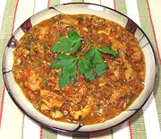

|
Chicken in Marsala SauceSicily - Pollo al Marsala | ||||
| Serves: Effort: Sched: DoAhead: |
2 main *** 1 hr Yes |
This delicious dish is NOT the Chicken Marsala featured on gourmet and celebrity chef sites. It comes from a Sicilian tourism promotion site featuring local recipes. | |||
|
|
1 4 3 1-1/2 6 1/4 2 1/3 1/4 |
# oz cl c oz c T t t |
Chicken (1). Onion Garlic Marsala Tomato Sauce (2) Parsley Olive Oil ExtV Salt Pepper black |
This recipe is far more practical for home cooking than the restaurant version, and is often served with tiny boiled new potatoes. See Note-3 for serving suggestions. Prep - (15 min)
|